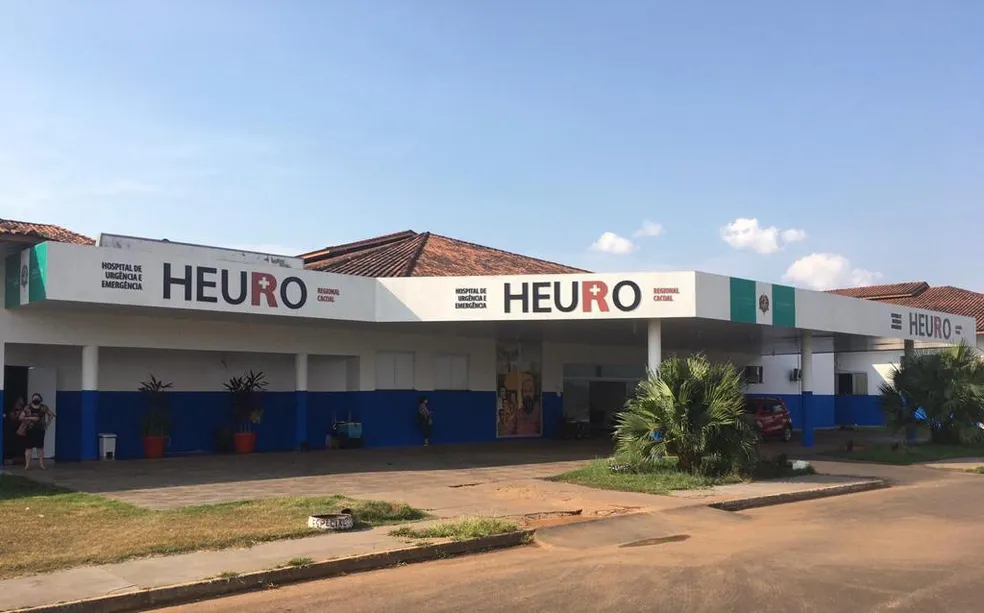

CIRURGIA GERAL EM RONDÔNIA
ISNP inicia serviços de Cirurgia Geral no HEURO de Cacoal
Instituto passa a atuar na especialidade no hospital localizado em Cacoal, Rondônia.

O Instituto de Saúde do Norte do Pará (ISNP) iniciou os serviços de Cirurgia Geral no HEURO de Cacoal, em Rondônia. O início das atividades marca a atuação do instituto nessa especialidade na unidade hospitalar.
Atuação em Cirurgia Geral
Com a prestação dos serviços, o ISNP passa a integrar a assistência em Cirurgia Geral do hospital. A atuação em Cacoal compõe a trajetória do instituto na área da saúde e sua presença em Rondônia.
O cuidado com as pessoas, o respeito e a responsabilidade orientam o trabalho do ISNP. São princípios que acompanham a atuação do instituto nos serviços médicos e na relação com as unidades onde está presente.
Sobre o instituto
Com sede em Novo Repartimento, no Pará, o ISNP atua na gestão e na prestação de serviços médicos em hospitais e unidades de pronto atendimento. O instituto também mantém canais de contato para hospitais interessados em conhecer suas soluções de gestão médica.
Voltar às notícias